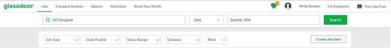

What site are you working with?
Glassdoor.com
What is the purpose of this site?
This site helps job seekers find open jobs, get salary estimates, read company reviews, get interview tips as well as receive alerts when a certain type of position is posted. Employers can also use this site to post jobs, advertise and get reviews and feedback from employees on what it is like working for their company.
What criteria are you using to analyze the site?
I thought for our first project I would use the guidelines recommended by Steve Krug in our assigned reading Don’t Make Me Think.
- Is it useful? - Does it do something people need done?
- Is it learnable? - Can people figure out how to use it?
- Is it memorable? - Do they have to relearn it each time they use it?
- Is it effective? - Does it get the job done?
- Is it efficient? - Does it do it wit ha reasonable amount of time and effort?
- Is it delightful? - Is using it enjoyable, or even fun?
Is it useful?
Yes! Job hunting can often be difficult and stressful. Glassdoor helps make it easier by compiling a large collection of job postings that are searchable by the job title, keywords, company, city, etc. On each job posting, there is an option to ‘save’ the job to review and apply to later. Glassdoor also offers salary estimates for many postings and allows searchers to read company reviews which often contain information such as workplace culture, benefits, etc.
Is it learnable?
Glassdoor is fairly easy to use, however there are so many options offered it does require a slight learning curve in comparison to more basic job search sites such as http://indeed.com. Some users may just want to search by city or keyword (which can be done) but there are several filters that can be used to help narrow down to find a position that would be best fit for you.
Is it memorable?
I feel that it is memorable if it is a site you use frequently or for an extended period of time. It may be more challenging for users to recall how to use each option if they have only visited the site once or twice. However I do think it glassdoor makes doing certain things fairly simple such as saving a job by clicking the heart that is on the posting which helps.
Is it effective?
Yes, overall I find this site to be quite effective and does what it is designed to do.
Is it efficient?
Glassdoor is very efficient. Of all the different ways you are able to utilize the site, I found myself clicking very few times throughout to get to where I needed to be. The menu that stays at the top no matter which page you are on makes this very easy.

Is it delightful?
I would be comfortable saying that Glassdoor is enjoyable has an enjoyable experience. It’s not the first site that I would go for entertainment but overall it accomplishes what it set out to do and makes it relatively easy to use. The site is broken down in ways that make it easy to navigate and has a design that does not overwhelm the senses with too much noise and chatter.